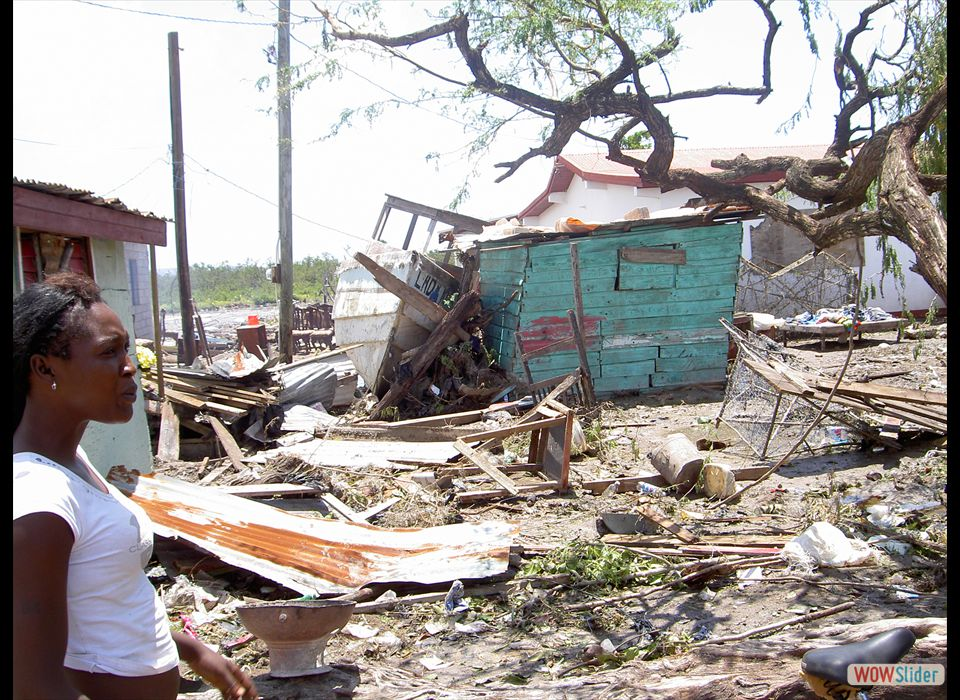
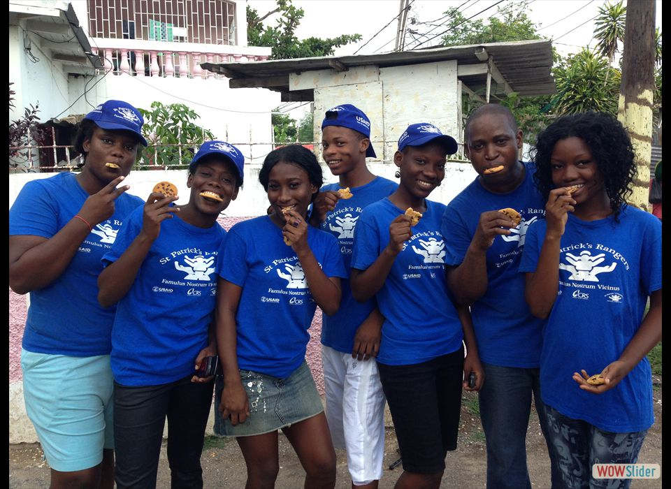
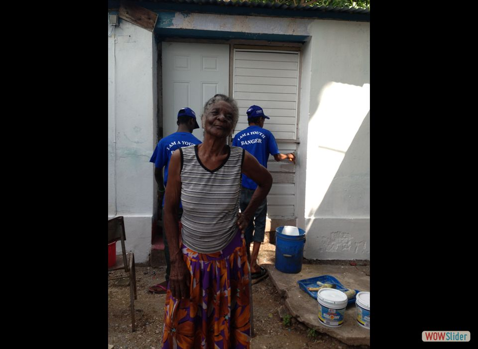
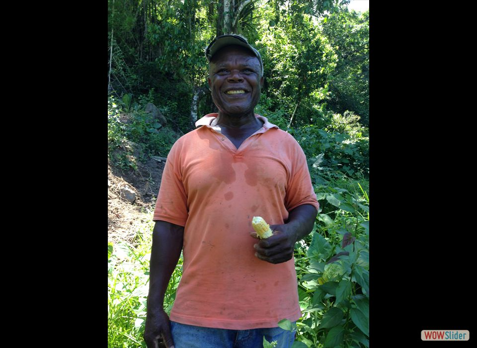

- Jamaica is no stranger to extreme weather, having been slammed by some 50 hurricanes and tropical storms since modern-day record keeping began in the late 1880s. Photo credit: USAID/OFDA
- USAID (OFDA) is partnering with Catholic Relief Services to support the St. Patrick’s Rangers, a program to empower at-risk youth to become the next generation of disaster responders. Photo credit: Carol Han, USAID/OFDA
- The St. Patrick’s Rangers help by repairing people’s homes, like that of 83-year-old Sylvia Warren. They also teach communities how to better prepare for disasters. Photo credit: Carol Han, USAID/OFDA
- USAID (OFDA) is also working with Help Age International to help farmers in rural Jamaica. After Hurricane Ivan wiped out his farm in 2004, Paul Forgie received seeds and tools to bounce back. Photo credit: Carol Han, USAID/OFDA